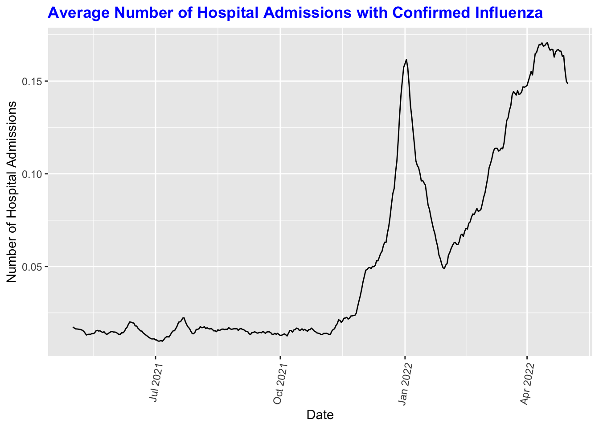

Exploratory Analysis
Data Description
final_long=
read_csv("Data/final_long.csv")
final_long %>%
select(admission_prop, maskwearing_prop, symptom_prop, finances_prop, depression_prop) %>%
summary() %>%
knitr::kable(digits = 3)| admission_prop | maskwearing_prop | symptom_prop | finances_prop | depression_prop | |
|---|---|---|---|---|---|
| Min. :-0.024517 | Min. : 8.563 | Min. :0.000 | Min. :18.94 | Min. : 2.355 | |
| 1st Qu.: 0.003714 | 1st Qu.:39.341 | 1st Qu.:1.034 | 1st Qu.:34.72 | 1st Qu.:11.022 | |
| Median : 0.021168 | Median :51.169 | Median :1.532 | Median :37.37 | Median :12.479 | |
| Mean : 0.053085 | Mean :52.749 | Mean :1.817 | Mean :37.45 | Mean :12.619 | |
| 3rd Qu.: 0.066314 | 3rd Qu.:65.357 | 3rd Qu.:2.189 | 3rd Qu.:40.35 | 3rd Qu.:14.076 | |
| Max. : 0.989330 | Max. :96.657 | Max. :7.969 | Max. :52.46 | Max. :25.160 |
Our data has 18540 observations and 9 variables and tells us about maskwearing, influenza symptoms, and admissions across the U.S. from years 2021-05-01 to 2022-05-01.
The average percentage of people who say they wear a mask most or all of the time when they are in public in the past 7 days is 52.75%. The average percentage of adult and pediatric hospital admissions with confirmed influenza occurring each day (7-day average) is 0.05%, the average percentage of people self-reporting influenza-like symptoms such as fever with cough or sore throat in the past 7 days is 1.81%, the average percentage of people who reported feeling depressed for most or all of the past 7 days is 12.61%, and the average percentage of people who report being very or somewhat worried about their “household’s finances for the next month” is 37.45%.
Overall Trend in the U.S.for Participants Wearing Masks between 2021 - 2022
final_long%>%
drop_na%>%
group_by(date)%>%
summarize(avg_maskwearing_prop = mean(as.numeric(maskwearing_prop))) %>%
ggplot(aes(x = date, y = avg_maskwearing_prop)) +
geom_line()+
labs(title = "Average Percentage of People Wearing Masks", x = "Date", y = "Percentage of People Wearing Masks")+
theme(plot.title=element_text(face="bold", color="blue"))+
theme(axis.text.x = element_text(angle=80, hjust=1))
Based on the graph, we can see that there was a huge drop from May 2021 to July 2021. This was due to the fact that in May 2021, as the United States continued to see dramatic improvements in COVID-19 cases, federal officials announced a sweeping relaxation of face mask guidelines allowing fully vaccinated people from not wearing masks in most places, either outdoors or inside (https://www.latimes.com/science/story/2021-07-27/timeline-cdc-mask-guidance-during-covid-19-pandemic). However, mask wearing rate increased around September 2021 potentially because of a continued uptick in positive COVID-19 cases due to the Delta variant. (https://abc7ny.com/nyc-face-mask-guidance-restaurants-vaccine-mandate-danny-meyer-delta-variant/10924328/). Lastly, we see another hugh drop starting in February 2022 as infections in the U.S. decreased by 90% from a pandemic high during, leading the states to lift the mask mandates. (https://www.cnbc.com/2022/02/22/covid-infections-plummet-90percent-from-us-pandemic-high-states-lift-mask-mandates.html)
Overall Trend in the U.S. for Participants with Influenza Symptoms between 2021 - 2022
final_long%>%
drop_na%>%
group_by(date)%>%
summarize(avg_symptom_prop = mean(as.numeric(symptom_prop))) %>%
ggplot(aes(x = date, y = avg_symptom_prop)) +
geom_line() +
labs(title = "Average Percentage of Participants with Influenza Symptom", x = "Date", y = "Percentage of People with Influenza Symptom") +
theme(plot.title=element_text(face="bold", color="blue")) +
theme(axis.text.x = element_text(angle=80, hjust=1))
A surge in the percentage of people with influenza symptoms occurred between late December 2021 to January 2022 from 2% to 5%. Prior to that, we see a gradual increase from 1% to 2% between May 2021 to November 2021. The surge during the winter months coincides with the average peak flu activity in the US from 1982 to 2022 (CDC, 2022 https://www.cdc.gov/flu/about/season/flu-season.htm), which is between December and February.
Overall Trend in the U.S. for Hospital Admissions with Confirmed Influenza between 2021 - 2022
final_long%>%
drop_na%>%
group_by(date)%>%
summarize(avg_admission_prop = mean(as.numeric(admission_prop))) %>%
ggplot(aes(x = date, y = avg_admission_prop)) +
geom_line()+
labs(title = "Average Number of Hospital Admissions with Confirmed Influenza", x = "Date", y = "Number of Hospital Admissions")+
theme(plot.title=element_text(face="bold", color="blue"))+
theme(axis.text.x = element_text(angle=80, hjust=1))
The above-mentioned trend on Flu symptom perfectly matches with the proportion of hospital admissions which also peaked in January 2022 at approx. 0.15%, there is another peak in hospital admission later in April 2022 at approx. 0.16%. A possible explanation could be the landing of the Omicron strain in the US which started in December 2021 as well as the decreasing trend of mask-wearing as states began to loosen the mask mandate.
Overall Trend in the U.S. for Participants Worried about Finances between 2021 - 2022
final_long%>%
drop_na%>%
group_by(date)%>%
summarize(avg_finances_prop = mean(as.numeric(finances_prop))) %>%
ggplot(aes(x = date, y = avg_finances_prop)) +
geom_line()+
labs(title = "Average Percentage of Participants worried about finance", x = "Date", y = "Percentage of Participants Worried about Finance")+
theme(plot.title=element_text(face="bold", color="blue"))+
theme(axis.text.x = element_text(angle=80, hjust=1))
Overall, there is a gradually increasing trend of people worrying about their household financial status from July 2021 to March 2022. The trend peaked in March 2022 at 42% and then sharply dropped to 37% in April 2022.
Overall Trend in the U.S. for Depressed Participants between 2021 - 2022
final_long %>%
drop_na %>%
group_by(date)%>%
summarize(avg_depression_prop = mean(as.numeric(depression_prop))) %>%
ggplot(aes(x = date, y = avg_depression_prop)) +
geom_line()+
labs(title = "Average Percentage of Depressed Participants", x = "Date", y = "Percentage of Depressed Participants")+
theme(plot.title=element_text(face="bold", color="blue"))+
theme(axis.text.x = element_text(angle=80, hjust=1))Trend stayed flat at 11% from May to August 2021 and sharply increased to 13-15% in September and remained elevated until late January 2022. In May 2022, it decreased back to 12%. This drop is likely due to imporvements mental health status as more public facilities and events reverted back to pre-pandemic operations.